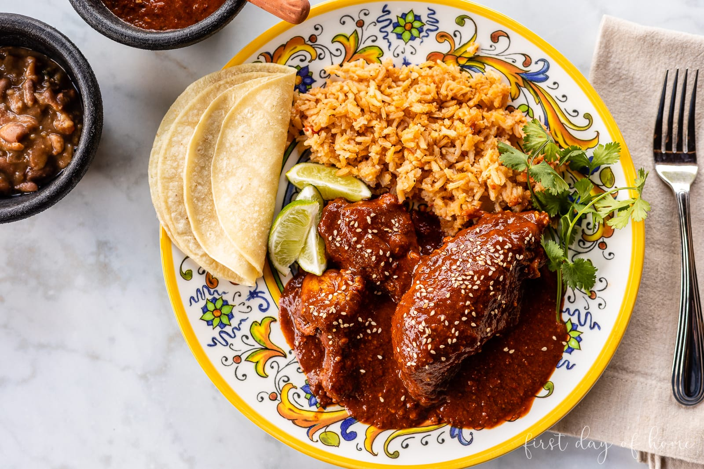

Mole

Description
Mole is a very yummy Mexican dish. To quote Wikipedia: "Mole, meaning
'sauce', is a traditional sauce and marinade originally used in Mexican
cuisine. In contemporary Mexico the term is used for a number of sauces".
Ingredients
- 1 jar (8.25 oz) Doña Maria Mole Sauce
- 4-6 pieces of chicken breasts
- 4 cups chicken broth (or water)
- 1 tbsp peanut butter (optional, for added creaminess)
- 1-2 tbsp sugar (optional, to balance flavors)
- 2 tbsp vegetable oil
- Warm tortillas (for serving)
-
Optional toppings: sesame seeds, chopped cilantro, or sliced onions